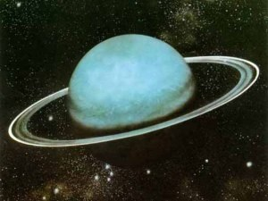
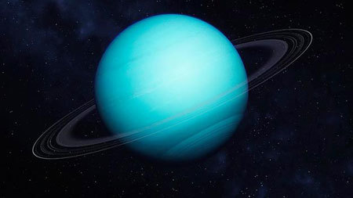

Planet Uranus adalah urutan ketujuh dari Matahari. Yang membedakan planet Uranus dari planet-planet yang lain adalah bahwa salah satu kutubnya menghadap ke Matahari. Uranus berotasi pada sumbu yang sebidang dengan bidang edarnya mengelilingi matahari. Hal ini berbeda dengan planet-planet lain. Satu teori menyatakan bahwa hal ini diakibatkan planet Uranus ditabrak oleh suatu objek besar, sehingga bergeser ke sisinya. Sedangkan objek yang menabraknya hancur dan bekas meninggalannya membentuk awan uap air batu-batu di sekitar Uranus yang membentuk cincin tipis. Uranus berotasi dalam waktu 11 jam dan berevolusi dalam waktu sekitar 84 tahun. Jarak Uranus dari matahari sekitar 2.870 juta kilometer, karena itu Uranus menjadi planet ketujuh setelah Saturnus dalam tata surya kita. Diameter Uranus sekitar 50.100 kilometer. Uranus memiliki 5 satelit, yaitu Miranda, Ariel, Umbriel, Titania, dan Oberon. Sebagaimana Saturnus, Uranus juga dikelilingi cincin-cincin. Ada teori yang menyatakan bahwa cincin tipis yang menyelubungi planet Uranus terbentuk akibat salah satu satelinya dihantam oleh meteor. Seperti Neptunus, kebanyakan dari Uranus adalah suatu samudra air yang kotor yang tecampur gas metana dan amoniak. Atmosfernya yang terdiri dari helium dan hidrogen memperlihatkan suatu jejak gas metana yang memberi warna hijau kebiru-biruan pada planet